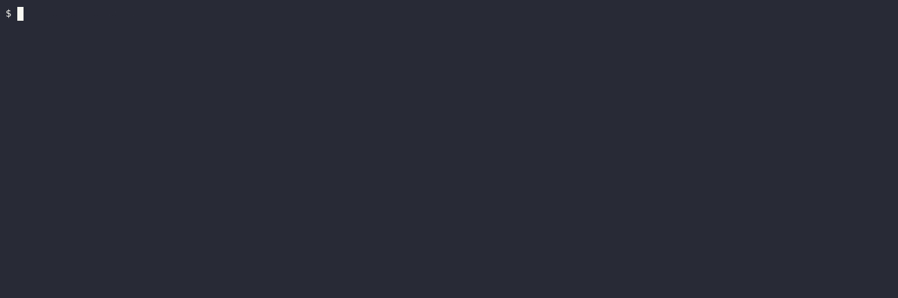

Rule keyword
The purpose of the Rule keyword is to represent a business rule that should be implemented. It provides additional information for a feature. A Rule is used to group together several scenarios belonging to the business rule. A Rule should contain one or more scenarios illustrating the particular rule.
No additional work is required on the implementation side to support Rules.
Feature: Animal feature
Rule: Hungry cat becomes satiated
Scenario: If we feed a hungry cat it will no longer be hungry
Given a hungry cat
When I feed the cat
Then the cat is not hungry
Rule: Satiated cat remains the same
Scenario: If we feed a satiated cat it will not become hungry
Given a satiated cat
When I feed the cat
Then the cat is not hungry
use std::{convert::Infallible, time::Duration}; use async_trait::async_trait; use cucumber::{given, then, when, World, WorldInit}; use tokio::time::sleep; #[derive(Debug)] struct Cat { pub hungry: bool, } impl Cat { fn feed(&mut self) { self.hungry = false; } } #[derive(Debug, WorldInit)] pub struct AnimalWorld { cat: Cat, } #[async_trait(?Send)] impl World for AnimalWorld { type Error = Infallible; async fn new() -> Result<Self, Infallible> { Ok(Self { cat: Cat { hungry: false }, }) } } #[given(regex = r"^a (hungry|satiated) cat$")] async fn hungry_cat(world: &mut AnimalWorld, state: String) { sleep(Duration::from_secs(2)).await; match state.as_str() { "hungry" => world.cat.hungry = true, "satiated" => world.cat.hungry = false, _ => unreachable!(), } } #[when("I feed the cat")] async fn feed_cat(world: &mut AnimalWorld) { sleep(Duration::from_secs(2)).await; world.cat.feed(); } #[then("the cat is not hungry")] async fn cat_is_fed(world: &mut AnimalWorld) { sleep(Duration::from_secs(2)).await; assert!(!world.cat.hungry); } #[tokio::main] async fn main() { AnimalWorld::run("/tests/features/book/writing/rule.feature").await; }
